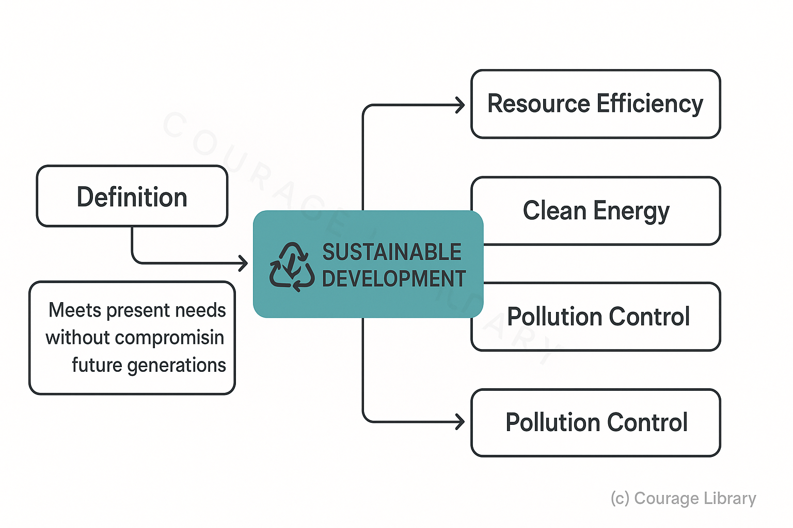
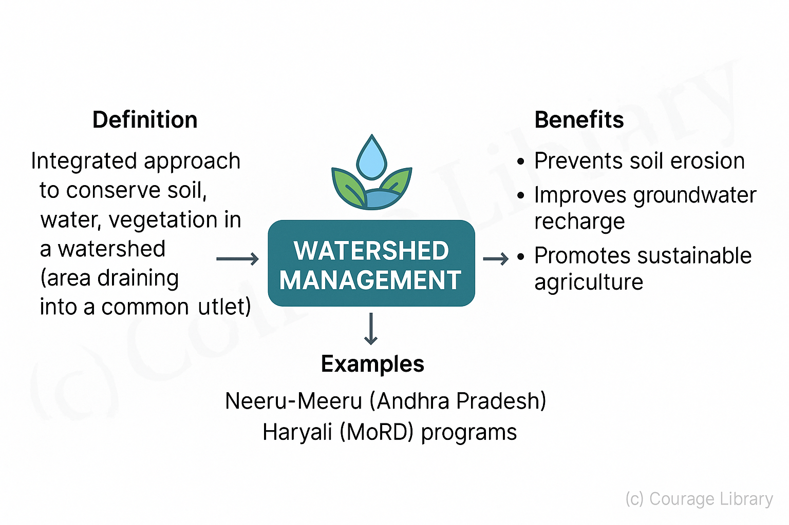
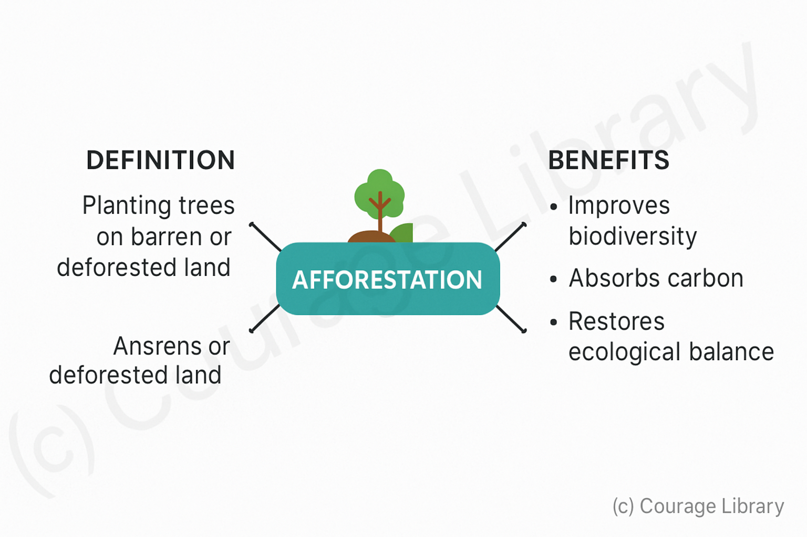
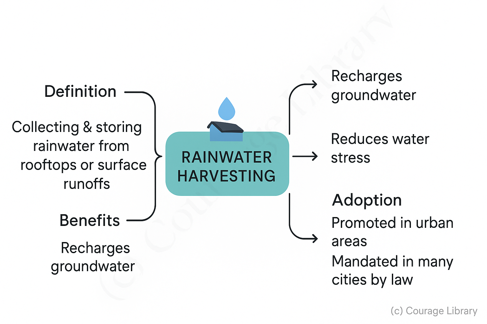
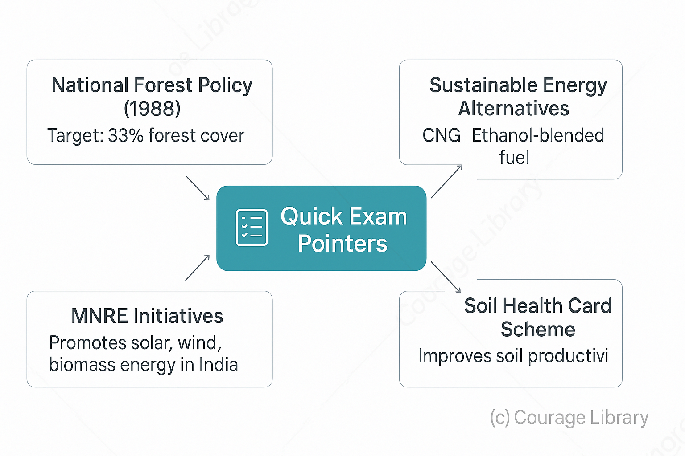

SSC CGL - Detailed Guide 2025
Self-Paced Course
Natural Resources
Reference: Lucent GK, NCERT Class 6–12
Types of Resources
Resources are classified based on their origin, renewability, and availability.
| Classification | Types | Description | Examples |
|---|---|---|---|
| Renewability | Renewable | Replenished naturally over time | Solar energy, Wind, Forests, Water |
| Non-renewable | Finite reserves; take millions of years to form | Coal, Petroleum, Natural Gas, Minerals | |
| Origin | Biotic | Obtained from living organisms | Plants, Animals, Forests |
| Abiotic | Derived from non-living sources | Water, Soil, Minerals, Sunlight |
- Renewable ≠ infinite (e.g., forest & water can be overused)
- Fossil fuels are non-renewable and a major cause of pollution
Major Resources of India
Forest Resources
| Feature | Details |
|---|---|
| Forest Cover | ~24% of India’s total geographical area (as per FSI) |
| Types (by climate) | Tropical Evergreen, Deciduous, Thorny, Montane, Mangrove |
| Importance | Biodiversity, carbon sink, livelihood for tribals |
| Threats | Deforestation, mining, shifting cultivation |
Forests Act as lungs of Earth — regulate climate, soil, and water cycles.
Water Resources
| Source | Details |
|---|---|
| Surface Water | Rivers, lakes, reservoirs |
| Groundwater | Aquifers; used for irrigation and drinking |
| Issues | Water pollution, overextraction, scarcity |
| Major Rivers | Ganga, Yamuna, Godavari, Krishna, Brahmaputra |
Note: Over 80% of India’s freshwater is used in agriculture
Mineral & Energy Resources
| Type | Examples | Notes |
|---|---|---|
| Metallic | Iron, Copper, Bauxite, Gold | Used in construction, transport, industry |
| Non-Metallic | Limestone, Mica, Gypsum | Used in cement, insulation, fertilizer, etc. |
| Energy Resources | Coal, Petroleum, Natural Gas | Fossil fuels – major source of energy in India |
| Renewable Energy | Solar, Wind, Hydropower, Biomass | Promoted under National Solar Mission |
India has 5th largest wind power capacity & a fast-growing solar sector.
Land Resources
| Use | Percentage of Total Land Area (approx.) | Notes |
|---|---|---|
| Agriculture | ~60% | Primary livelihood source |
| Forest | ~24% | Below the National Forest Policy goal of 33% |
| Non-agricultural use | ~10% | Includes settlements, roads, industries |
| Barren / Wasteland | ~6% | Requires reclamation |
Resource Conservation Methods
Sustainable Development
- Definition: Development that meets present needs without compromising the ability of future generations to meet theirs
- Includes: Resource efficiency, clean energy, recycling, pollution control


Watershed Management
- Integrated approach to conserve soil, water, and vegetation within a watershed (area draining into a common outlet).
-
Benefits:
- Prevents soil erosion
- Improves groundwater recharge
- Promotes sustainable agriculture
- Example: Neeru-Meeru (Andhra Pradesh), Haryali (MoRD) programs
Afforestation
- Planting trees on barren or deforested land
- Improves biodiversity, carbon absorption, and restores ecological balance


Rainwater Harvesting
- Collecting and storing rainwater from rooftops or surface runoffs
- Recharges groundwater, reduces water stress
- Widely promoted in urban areas; mandated in many cities by law
Quick Exam Pointers
- National Forest Policy (1988) target: 33% forest cover
- MNRE promotes solar, wind, and biomass energy in India
- CNG, ethanol-blended fuel = sustainable energy alternatives
- Soil Health Card Scheme: Improve soil productivity

Developed By Roopasree Challa
Next
Start Your SSC CGL Journey Now!
Join Courage Library to experience disciplined study and expert support.
Be a Couragian!